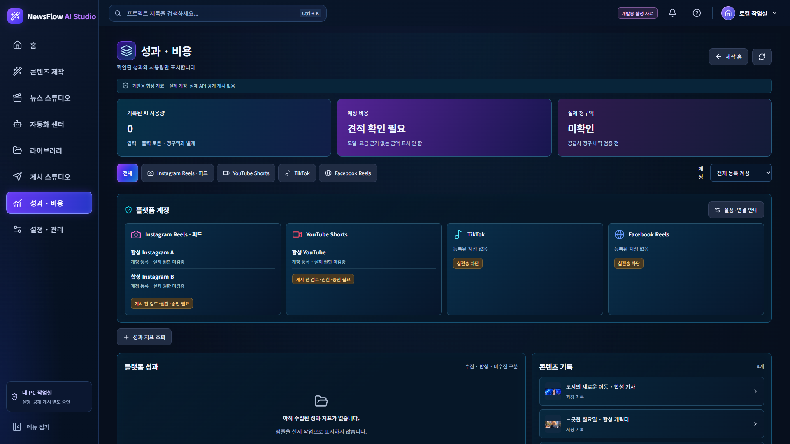

NewsFlow AI 시각 인수뉴스 쇼츠 MAJOR
기사·대본·9:16 미리보기·음성 4영역과 하단 타임라인은 존재한다. 그러나 승인 원본의 중앙 대본+미리보기 묶음과 다르며, 단계/명령 행과 편집 높이 때문에 1920에서도 타임라인이 하단에 걸리고 1366에서는 추가 스크롤이 필요하다.
유지 조건: 실제 모델·음성 선택과 검토/비용 승인 폼은 유지해야 한다. 합성 컬러바는 기존 1080×1920 검증 파일이며 승인 PNG의 완성 영상 복제물이 아니다.
조치/수정안: 기능/승인 폼을 유지한 상태에서 중앙 편집+미리보기 그룹 및 타임라인의 높이 배분을 조정하는 안을 사용자 확인 후 적용한다.
승인 원본

현재 1920 · 기존 증거 재사용

현재 1366 · 기존 증거 재사용

캐릭터 쇼츠 MAJOR
3단계와 참조·스토리·미리보기 3열은 유지되지만 원본의 영상 옆 설정/비용과 즉시 보이는 하단 장면 카드가 현재는 서로 다른 아래 영역으로 밀린다. 1920 첫 캡처에서도 스토리보드는 보이지 않는다.
유지 조건: 저장된 참조 PNG와 완료 영상을 구분하며 미완료 영상은 빈 상태다. 실제 모델·견적·생성 승인 조건과 3장면 데이터는 시안의 예시 5장면/55초로 대체하지 않는다.
조치/수정안: 기존 3열 안에서 참조/스토리 높이와 우측 설정 위치를 재배분하는 안만 승인 후 적용한다. 가짜 캐릭터/완성 클립은 넣지 않는다.
승인 원본

현재 1920 · 기존 증거 재사용

현재 1366 · 기존 증거 재사용

독립 AI 이미지 MINOR
지시문/모델·중앙 캔버스·우측 이력의 핵심 3열은 충족한다. 1366 우측 이력의 제목이 상태 배지에 눌리던 현상을 재현하여 제목/상태를 별도 행으로 최소 보정했다. 1920에서도 제목 가독성을 확인했다.
유지 조건: 참조 로컬 보관과 유료 편집 생성은 별개다. 미지원 편집/스타일 기능을 장식 버튼으로 추가하지 않고 실제 성공 파일만 표시한다.
조치/수정안: 보정된 상태를 인수 후보로 제시한다. 모델명 길이와 실제 데이터에 따른 줄바꿈 차이는 남는다.
최소 보정 전 / 후 · 같은 viewport / 합성 데이터 / 스크롤 위치
이전 1920 · 기존 캡처 재사용

이후 1920 · 신규 캡처

이전 1366 · 기존 캡처 재사용

이후 1366 · 신규 캡처
뉴스 기반 이미지 MATCH
기사 선택·카드/지시문·이미지 캔버스·속성/출처의 핵심 4영역과 독립 이미지/TOP 3 분리는 두 크기 캡처에서 확인된다. 핵심 배치 수정 필요 없음.
유지 조건: 저장된 카드가 없는 합성 상태를 예시 카드로 채우지 않는다. 원본의 사진·문구·금액은 실제 데이터로 대체하며 실제 생성 성공을 뜻하지 않는다.
조치/수정안: 현재 핵심 구성을 유지한다. MATCH는 픽셀 동일 또는 실제 API 성공 판정이 아니다.
TOP 3 자동 피드 MINOR
좌측 순위/설정·중앙 3개 독립 결과·우측 문구/출처 검토 구성은 충족한다. 공통 옵션은 승인 원본 중앙 상단과 달리 좌측에 있고, 상태/승인 안내로 결과 카드가 더 아래 시작한다. 1366에서는 결과 하단을 스크롤해야 한다.
유지 조건: 저장된 분석과 작업 고정값, 순위별 결과/오류, 검토 후 실행을 보존한다. 원본의 임의 생성·저장 성공 상태는 복제하지 않는다.
조치/수정안: 핵심 3개 결과 구조는 유지하고 작은 간격/위치 차이는 인수 의견으로 남긴다. 추가 소스 수정은 하지 않았다.
뉴스 스튜디오 MAJOR
3열과 기사·출처·다음 제작실 이동은 존재하지만 원본 중앙의 AI 분석 탭/핵심 키워드와 우측 관련 뉴스 영역이 현재 캡처의 본문 계층과 일치하지 않는다. 현재는 기사 상세와 분석 명령 중심이다.
유지 조건: 보관 기사 검색을 실시간 인기 TOP 3로 표시하지 않는다. 없는 분석 결과나 관련 뉴스는 생성해 채우지 않는다.
조치/수정안: 기존에 제공되는 분석 필드만 중앙 분석 영역으로 표현 가능한지 확인한 뒤 해당 배치 변경을 별도 승인받는다. 신규 분석 기능은 자동 추가하지 않는다.
승인 원본

현재 1920 · 기존 증거 재사용

현재 1366 · 기존 증거 재사용

자동화 센터 MAJOR
현재는 넓은 예약 카드 목록·우측 상세·하단 이력이다. 원본의 좌측 제작 유형과 중앙 다열 예약 테이블이 없어 정보 밀도와 조작 위치가 두 크기 모두 크게 다르다.
유지 조건: 예약 저장과 활성화는 분리하며 미지원 예약 종류/템플릿/무인 유료 실행을 추가하지 않는다. 결과 불명 자동 재요청 금지 유지.
조치/수정안: 지원되는 예약 필드만 이용한 테이블 및 선택 상세 배치안을 승인 후 적용한다. 지원하지 않는 제작 유형을 채우지 않는다.
라이브러리 FUNCTIONAL_CONSTRAINT
좌측 검색/유형·중앙 카드·우측 9:16 미리보기 핵심 배치는 충족한다. 원본의 다수 완성 썸네일/길이/기간 수치와 달리 누락 썸네일은 미리보기 없음으로 보이며 카드 수는 실제 합성 목록 수다.
유지 조건: 없는 썸네일·기간별 수·길이/용량·미구현 배치 기능을 꾸미지 않는다. 결과 불명 및 휴지 보관 경계를 보존한다. 주요 차이는 데이터/기능 정직성 때문에 유지한다.
조치/수정안: 현재 빈 상태/실제 자료 표시를 유지한다. 가짜 결과나 원본의 장식용 시간 이미지를 추가하지 않는다.
게시 스튜디오 MAJOR
5단계·초안·미리보기·4플랫폼 계정은 존재한다. 원본은 중앙 미리보기와 기본 정보 편집이 나란하지만 현재는 긴 미리보기 아래 검토 영역이 배치돼 1920에서도 검토 패널이 하단에 걸리고 1366에서는 더 내려야 한다.
유지 조건: 검토와 최종 실행 승인 분리, 실제 권한 미검증 표시, TikTok/Facebook 실전송 차단은 필수다. 원본의 연결 완료·일괄 예약을 가짜로 표시하지 않는다.
조치/수정안: 검토 폼과 미리보기의 같은 높이 배치를 사용자 승인 후 검토한다. 승인 단계를 줄이거나 실행 버튼으로 대체하지 않는다.
성과·비용 MAJOR
3개 요약·4플랫폼·Instagram 다중 계정 필터는 존재한다. 그러나 큰 전폭 계정 카드가 성과/콘텐츠보다 위에 있어 원본의 콘텐츠·미리보기·비용 집중 구조가 아래로 밀린다. 별개로 계정 라벨이 세로로 줄바꿈되던 MINOR 오류는 수정했다.
유지 조건: 미수집 지표, 추정 비용, 실제 청구액을 구분하며 미확인 금액/연결 성공을 원본 숫자로 채우지 않는다. 계정 식별자 없는 지표를 임의로 귀속하지 않는다.
조치/수정안: 계정 정보를 간결한 선택/요약 영역으로 재배치하는 안만 별도 승인 후 적용한다. 이번에는 라벨 CSS만 보정했다.
최소 보정 전 / 후 · 같은 viewport / 합성 데이터 / 스크롤 위치
이전 1920 · 기존 캡처 재사용

이후 1920 · 신규 캡처
이전 1366 · 기존 캡처 재사용

이후 1366 · 신규 캡처
설정·관리 MINOR
7개 기능 탭·7단계 가이드·계정·제작 기본값·API·뉴스/Windows 영역을 유지한다. 원본의 조밀한 여러 패널에 비해 가이드/계정 카드가 높아 개요 하단 항목은 스크롤해야 한다. 기능별 탭으로도 접근하는 기존 동선을 유지했다.
유지 조건: 키 저장과 인증 성공을 구분하고 Windows 조회/자동 시작은 명시적 사용자 동작으로 유지한다. 시안의 예시 모델/연결 상태는 복제하지 않는다.
조치/수정안: 높이/밀도 차이를 인수 의견으로 남기며 임의 축소나 기능 이동은 하지 않는다.
홈·콘텐츠 제작 홈 보호
소스 6개 및 PNG 4쌍 바이트 동일. 검증 근거. OS DPI·로컬 전체 Python 앱은 NOT VERIFIED.